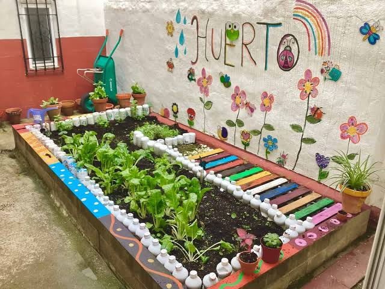
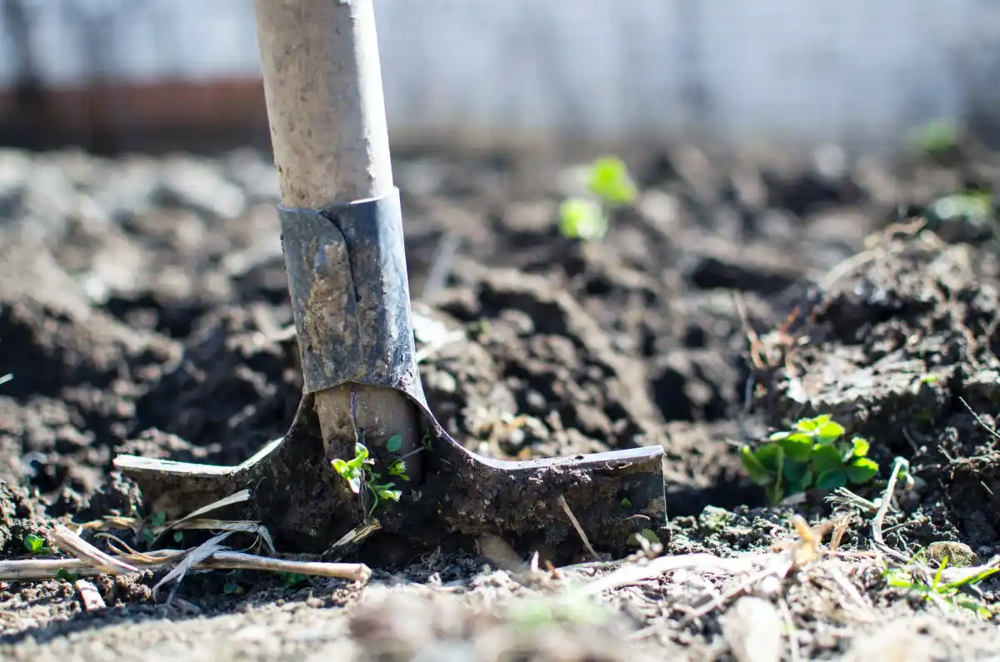
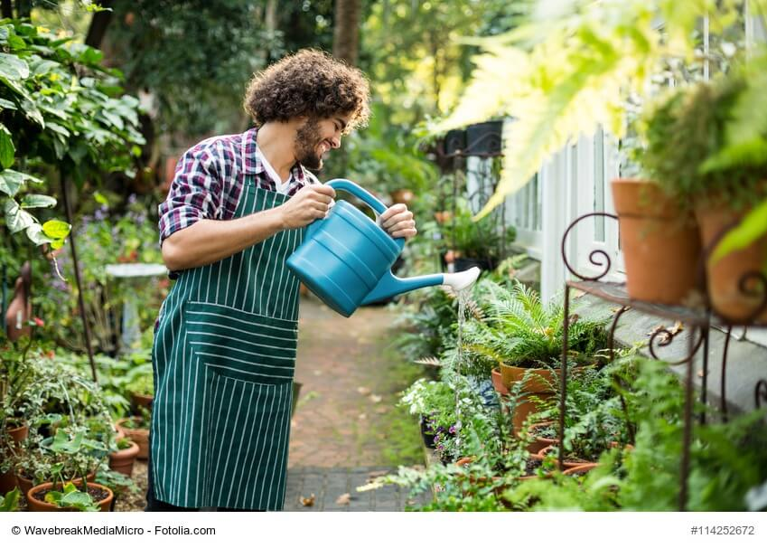
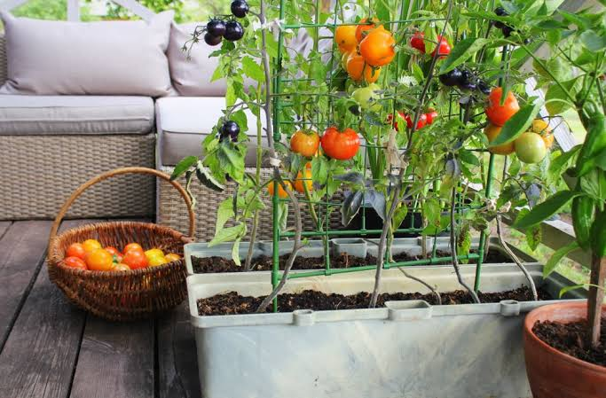
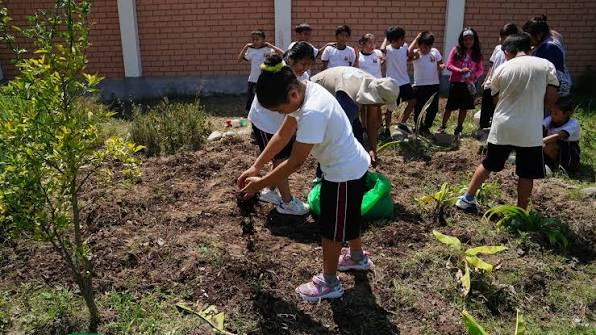

|
 Nuestro huertoEspacio destinado al cultivo de diferentes plantas y al aprendizaje de los estudiantes. |
 Preparación del sueloLos estudiantes preparan la tierra para sembrar y cuidar las plantas. |

SiembraLas semillas son colocadas cuidadosamente en la tierra para iniciar su crecimiento. |
 Cuidado de las plantasRegamos las plantas y revisamos que crezcan sanas y libres de plagas. |
|
 Plantas cultivadasEn nuestro huerto podemos cultivar alimentos como tomate, lechuga, zanahoria y rábano. |
 Trabajo en equipoEl huerto permite que los estudiantes trabajen juntos y aprendan a cuidar la naturaleza. |